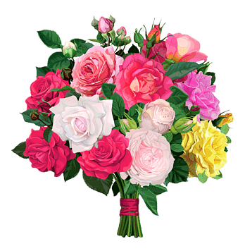

Pegue o bouquet antes da hora 💐
Catch the bouquet before it's too late 💐

🎉 Você venceu a caça ao bouquet! Um convite especial te aguarda.✨ 🎉
🎉 You won the bouquet hunt! A special invitation awaits you. ✨🎉
Clique aqui!
Click here!